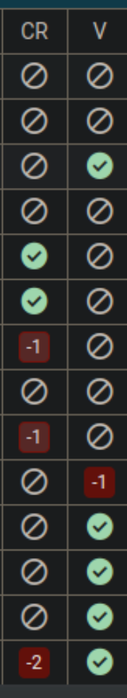

- Explained here
- A deployment is an update within the same minor version.
For instance, an update within 3.0. ( Happens in Stage and Production )
- stage-deployments result in building a new docker-image, that gets pushed
to Openshift.
- prod-deployments docker-image from stage gets copied and pushed
to Openshift
- A migration is an update across a major or minor version.
For instance, an update from 3.0 to 3.1.
- During a migration, an additional testnew system is created and
updated to the desired version.
gerrit-ci-cd
- Gerrit creates a “Pull request” for every commit made.
if there is one additional commit, it can be added with --amend
if multiple commits git rebase -i
- Every commit must be reviewed by another person, the reviewer
can give a ranking of:
-2: Do not submit
-1: I would prefer that you didnt submit this
+1: Looks good to me, but someone else must approve
+2: Looks good to me, approved
- A commit needs to have a +2 so that it can be submitted (merged)
It also needs a +1 from the Teamcity verification
- The Teamcity verification (V) starts automatically (as soon as a Teamcity agent is idle).
When the verification returns a -1, the jobs needs to be checked for the cause.
Also if no number or checkmark at all is appearing under (V).
This is probably a trigger-problem. (see image below)

- Once a commit has been submitted, additional jobs will be started to merge the changes
into the releases branch and to higher versions (if the changes were made on an older version).
Merging to higher versions can sometimes lead to merge conflicts which then need to be fixed.
openshift-nginx
How does the CI/CD Pipeline for the Tocco Nginx Webserver work ?
1.Pipeline-Trigger-gitlab-ci.yml
- Whenever you push to GitLab, the .gitlab-ci.yml defines
what jobs run (build, test, deploy, etc.).
- GitLab runners then pick up those jobs.